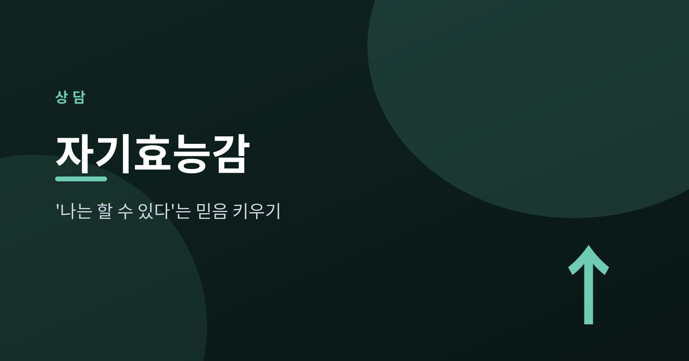
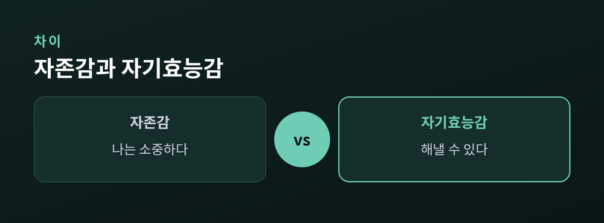
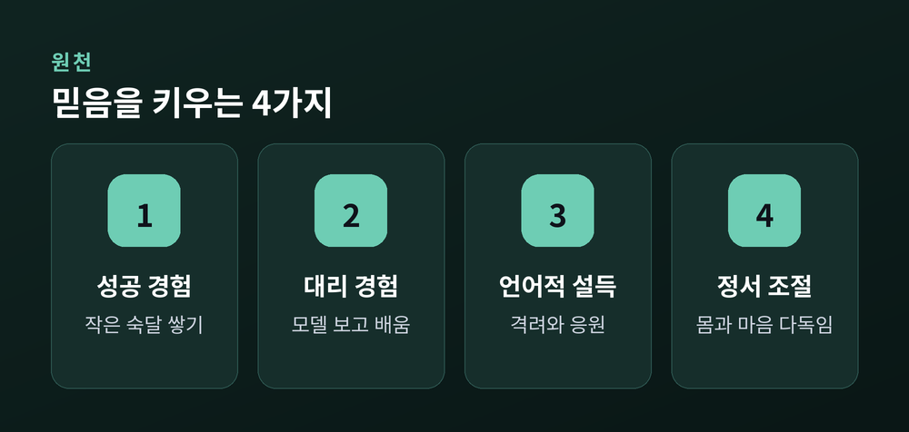
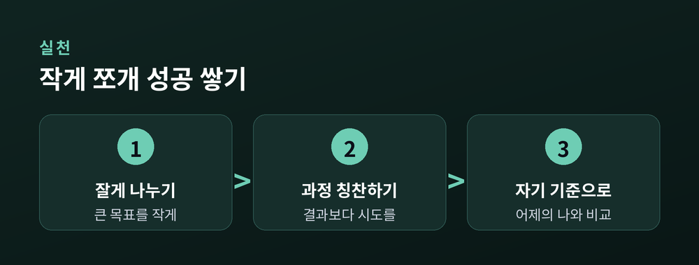

'나는 할 수 있다'는 믿음을 키우는 법

같은 일 앞에서도 누구는 "해볼 만하다" 하고, 누구는 "난 안 될 거야" 합니다. 이 차이를 만드는 마음의 힘이 바로 자기효능감입니다. 오늘은 자기효능감이 무엇인지, 왜 중요한지, 그리고 어떻게 키우는지 함께 살펴보겠습니다.
자기효능감은 심리학자 반두라가 제시한 개념으로, "특정 과제를 내가 해낼 수 있다"는 스스로에 대한 믿음입니다. 능력 자체가 아니라, 그 능력을 발휘할 수 있다는 기대에 가깝습니다.
자존감과는 결이 다릅니다. 자존감이 '나는 소중한 사람이다'라는 전반적 자기 가치라면, 자기효능감은 '이 일을 해낼 수 있다'는 과제 중심의 자신감입니다.
그래서 자기효능감은 상황마다 다르게 나타납니다. 발표는 자신 있어도 수영은 두려울 수 있는 것처럼요.

자기효능감이 높으면 어려운 일도 도전할 과제로 받아들입니다. 쉽게 포기하지 않고, 실패해도 다시 일어서는 회복탄력의 바탕이 됩니다.
반대로 자기효능감이 낮으면 상황을 실제보다 더 위협적으로 느낍니다. 그러다 보니 회피하거나 미루기로 이어지기 쉽습니다. "어차피 안 될 텐데"라는 생각이 시작 자체를 막습니다.
중요한 건, 자기효능감이 타고나는 성격이 아니라는 점입니다. 경험을 통해 얼마든지 키울 수 있는 마음의 근육에 가깝습니다.

반두라가 말한 네 원천은 일상 속 실천으로 이어집니다. 첫째, 작게 쪼개 성공을 쌓기입니다. 큰 목표를 잘게 나눠 하나씩 해내면, 숙달 경험이 차곡차곡 쌓입니다.
둘째, 과정을 칭찬하기입니다. 결과보다 "오늘 시작한 것 자체"를 인정해줍니다. 셋째, 비교 대신 자기 기준입니다. 남과 견주기보다 어제의 나와 비교합니다.
넷째, 부정적 자기대화 다루기입니다. "난 못 해"라는 말을 "지금은 어렵지만 연습하면 나아진다"로 바꿔봅니다. 정서와 몸 상태를 다독이는 것도 큰 힘이 됩니다.

'나는 할 수 있다'는 믿음은 한 번에 생기지 않습니다. 작은 성공을 쌓고, 애쓴 과정을 칭찬하며, 나를 향한 말투를 조금씩 바꿔갈 때 천천히 자라납니다. 오늘 아주 작은 한 걸음부터 시작해보세요. 다만 무기력과 자기 불신이 오래 이어져 일상이 힘들다면, 혼자 힘들어하지 마시고 전문 상담의 도움을 받는 것도 좋은 선택입니다.